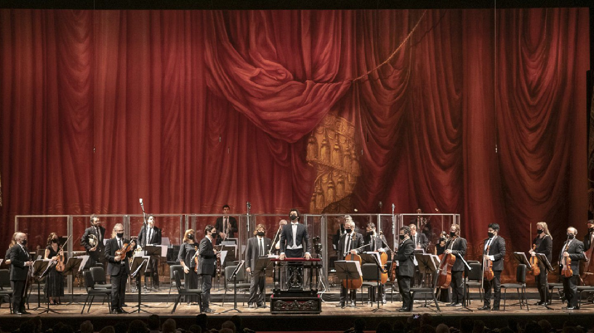
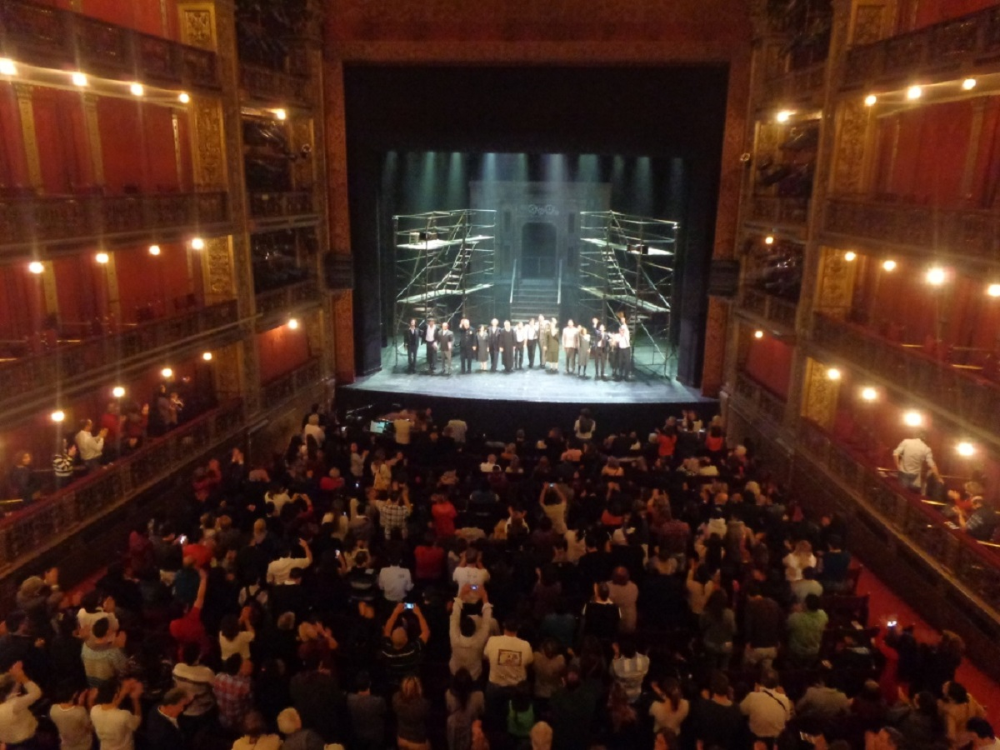

Bajo el nombre de "Rutas Teatrales" se realizarán tours que invitan
a conocer la historia, mitos y leyendas de los teatros más prestigiosos de la
Ciudad de Buenos Aires. Los participantes viajaran por el pasado, el presente y
el futuro de una de las escenas más vibrantes del mundo, cuyo epicentro local es
la "calle que nunca duerme".
Para más información sobre las proximas salidas, horarios y precios
Ponete en contacto con nosotros, envianos un mensaje
Contacto
- 
- 